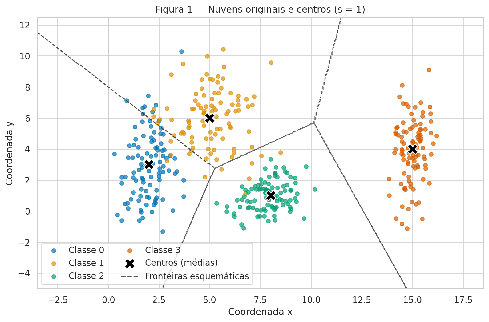
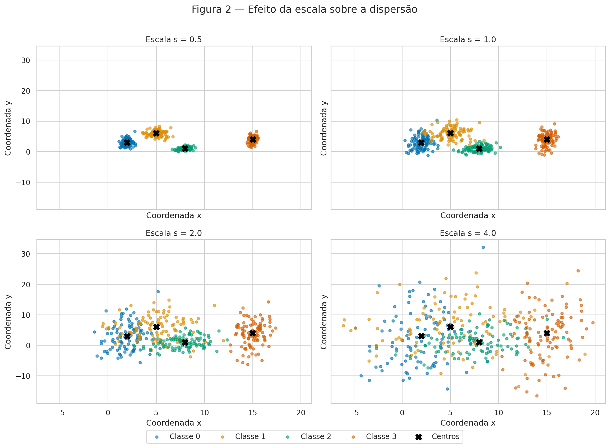
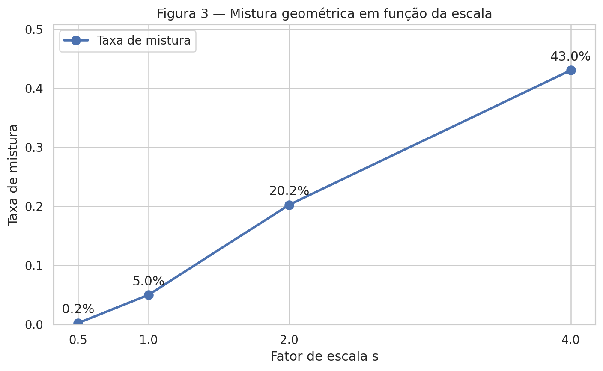
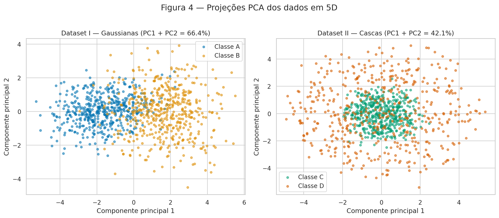
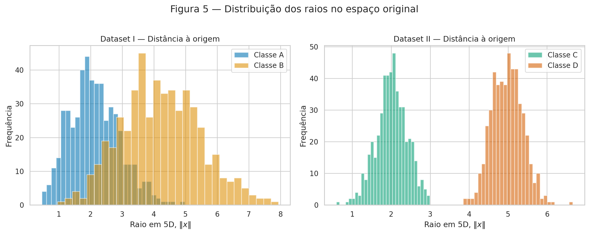
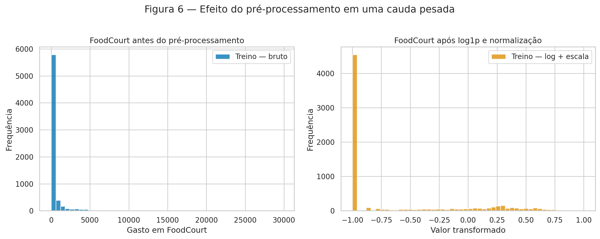

Atividade — Preparação e análise de dados
Aluno: Gabriel Gerner Maggion
Disciplina: Artificial Neural Networks and Deep Learning — Insper, 2026.2
O objetivo deste relatório é investigar como a dispersão e a geometria dos
dados afetam um problema de classificação e, em seguida, preparar um conjunto
real para uma rede neural com ativação tanh. Todo o código foi executado com
semente fixa. Na parte sintética, foi usado apenas um gerador:
rng = np.random.default_rng(42).
Exercise 1
A — Generate the clouds
Foram geradas 400 observações, 100 por classe, a partir de distribuições Gaussianas bidimensionais independentes. As médias e os desvios-padrão usados foram exatamente os fornecidos no enunciado.
| Classe | Média | Desvio-padrão |
|---|---|---|
| 0 | \([2, 3]\) | \([0.8, 2.5]\) |
| 1 | \([5, 6]\) | \([1.2, 1.9]\) |
| 2 | \([8, 1]\) | \([0.9, 0.9]\) |
| 3 | \([15, 4]\) | \([0.5, 2.0]\) |

Figura 1. Nuvens em \(s=1\), com os centros verdadeiros marcados por X.
As linhas tracejadas são um esboço das regiões de centro mais próximo. Elas
não são o resultado de um modelo treinado.
B — More or less spread out
Para isolar o efeito da escala, sorteei uma única matriz de ruídos Gaussianos padronizados e construí cada observação como
Assim, as médias e as realizações padronizadas são mantidas, e somente a dispersão muda entre os quatro conjuntos.

Figura 2. As quatro escalas usam os mesmos limites nos eixos. Em \(s=0.5\) as nuvens são compactas; em \(s=2\) a sobreposição já é forte; em \(s=4\) as classes ocupam extensas regiões em comum.
A razão de separação foi calculada por
| Par | \(r_{ij}\) em \(s=1\) |
|---|---|
| (0, 1) | 1.326 |
| (0, 2) | 2.480 |
| (0, 3) | 4.496 |
| (1, 2) | 2.380 |
| (1, 3) | 3.642 |
| (2, 3) | 3.542 |
O menor valor é 1.326 para o par (0, 1), coerente com a sobreposição azul e amarela da Figura 1. Como a razão varia com \(1/s\), em \(s=2\) esse menor valor cai para 0.663, sem necessidade de gerar novas observações.
A taxa de mistura é a fração dos pontos cujo centro mais próximo não é o centro de sua própria classe. Os valores obtidos foram:
| Escala \(s\) | Pontos misturados | Taxa de mistura |
|---|---|---|
| 0.5 | 1 de 400 | 0.25% |
| 1.0 | 20 de 400 | 5.00% |
| 2.0 | 81 de 400 | 20.25% |
| 4.0 | 172 de 400 | 43.00% |

Figura 3. A mistura cresce rapidamente com a dispersão. Considerando uma separação linear visualmente útil, a quebra fica clara a partir de \(s=2\): mais de um quinto das amostras está mais perto do centro errado e o menor \(r_{ij}\) já é \(0.663<1\). Em sentido matemático estrito, Gaussianas têm suporte ilimitado e nem mesmo uma escala pequena garante separação perfeita; aqui a conclusão se refere à amostra finita e à geometria observada.
C — Analysis
Em \(s=1\), as classes 0 e 1 se sobrepõem, enquanto a classe 3 permanece bem afastada e a classe 2 é a mais compacta. Uma única reta não pode separar quatro classes. Um conjunto de fronteiras lineares consegue criar regiões multiclasse aproximadas, como no esboço da Figura 1, mas não alcança separação perfeita: a taxa de mistura de 5.00% confirma que há pontos em regiões ambíguas.
As fronteiras tracejadas da Figura 1 correspondem a uma hipótese simples de centro mais próximo. Uma rede poderia aprender fronteiras por partes e ajustar curvas locais devido aos diferentes desvios das classes. Quando \(s\) cresce, a faixa na qual as distribuições coexistem também cresce. Nessa faixa, amostras com entradas parecidas podem ter rótulos diferentes; portanto, aumenta a região em que até uma fronteira mais flexível necessariamente comete erros.
Exercise 2
A — Dataset I: shifted Gaussians
Gerei 500 observações para cada classe em cinco dimensões usando as médias e matrizes de covariância do enunciado. A Classe A é centrada na origem e a Classe B tem centro teórico \([1.5,1.5,1.5,1.5,1.5]\). As covariâncias diferentes produzem orientações e dispersões diferentes, incluindo correlação positiva entre as duas primeiras variáveis na Classe A e negativa na Classe B.
B — Dataset II: concentric shells
Para cada observação, sorteei \(v\sim\mathcal N(0,I_5)\) e normalizei \(u=v/\lVert v\rVert\). Depois, multipliquei a direção pelo raio sorteado: \(\rho\sim\mathcal N(2,0.4)\) para a Classe C e \(\rho\sim\mathcal N(5,0.4)\) para a Classe D. Isso produz um núcleo e uma casca concêntricos em cinco dimensões, com 500 pontos por classe.
C — Visualize and compare

Figura 4. No Dataset I, PC1 + PC2 explicam 66.44% da variância. No Dataset II, explicam apenas 42.15%. A projeção do Dataset I preserva melhor a informação relevante à classificação: o deslocamento entre os centros continua visível. No Dataset II, a projeção sugere núcleo e anel, mas perde três componentes que também fazem parte do raio original.
As distâncias empíricas entre os centros, calculadas no espaço 5D antes do PCA, são:
| Conjunto | Distância entre os centros |
|---|---|
| Dataset I — Gaussianas deslocadas | 3.3559 |
| Dataset II — Cascas concêntricas | 0.2614 |
No Dataset I, o valor é muito próximo da distância teórica \(\sqrt{5(1.5)^2}=3.3541\). No Dataset II, a pequena distância residual vem da amostragem finita; teoricamente, ambos os centros estão na origem.

Figura 5. No Dataset I há sobreposição substancial das distâncias à origem. No Dataset II, apesar de os centros quase coincidirem, os raios se concentram perto de 2 e 5 e ficam claramente separados.
D — Analysis
A combinação de centros coincidentes com raios separados mostra que a informação discriminante do Dataset II é radial, não direcional. Um hiperplano divide o espaço em dois semiespaços, mas não consegue envolver o núcleo com uma classe e deixar a casca inteira do lado oposto. Como a casca circunda o núcleo em todas as direções, qualquer hiperplano que atravesse a região contém pontos das duas classes em seus lados. Mais dados apenas tornam essa estrutura mais evidente; não a torna linearmente separável.
Uma projeção PCA aparentemente misturada não prova inseparabilidade no espaço original: PCA é linear, otimiza variância total e descarta três das cinco dimensões, sem usar os rótulos. Para este conjunto, uma função não linear simples resolve a geometria:
Podemos classificar como D quando \(g(x)>0\) e como C quando \(g(x)\le 0\). O limiar \(12.25=3.5^2\) fica entre os raios médios 2 e 5. A superfície de decisão é uma hiperesfera, e não um hiperplano.
Exercise 3
A — Get to know the data
O Spaceship Titanic
é um problema de classificação binária. A coluna Transported indica se o
passageiro foi transportado para outra dimensão após a colisão da nave com uma
anomalia espaço-temporal. O arquivo possui 8.693 linhas: 4.378 positivas
(50.36%) e 4.315 negativas (49.64%), portanto o alvo é praticamente
balanceado.
As variáveis foram separadas assim:
- Numéricas:
Age,RoomService,FoodCourt,ShoppingMall,SpaeVRDeck. - Categóricas/binárias:
HomePlanet,CryoSleep,DestinationeVIP. - Identificadores ou texto não estruturado:
PassengerId,Cabin,Name. - Alvo:
Transported.
Valores ausentes
| Coluna | Ausentes | Percentual |
|---|---|---|
| PassengerId | 0 | 0.00% |
| HomePlanet | 201 | 2.31% |
| CryoSleep | 217 | 2.50% |
| Cabin | 199 | 2.29% |
| Destination | 182 | 2.09% |
| Age | 179 | 2.06% |
| VIP | 203 | 2.34% |
| RoomService | 181 | 2.08% |
| FoodCourt | 183 | 2.11% |
| ShoppingMall | 208 | 2.39% |
| Spa | 183 | 2.11% |
| VRDeck | 188 | 2.16% |
| Name | 200 | 2.30% |
| Transported | 0 | 0.00% |
Distribuição dos gastos no conjunto completo
| Variável | Média | Mediana | Máximo |
|---|---|---|---|
| RoomService | 224.69 | 0.00 | 14,327 |
| FoodCourt | 458.08 | 0.00 | 29,813 |
| ShoppingMall | 173.73 | 0.00 | 23,492 |
| Spa | 311.14 | 0.00 | 22,408 |
| VRDeck | 304.85 | 0.00 | 24,133 |
Todas as medianas são zero, mas as médias são positivas e os máximos são muito
altos. Logo, as distribuições têm grande massa em zero, cauda longa à direita
e forte assimetria positiva. Depois do split, FoodCourt no treino apresentou
média 452.61 e mediana 0.00, antes de qualquer transformação.
B — Split before you transform
Foi feito um split estratificado 80/20 com random_state=42: 6.954 linhas no
treino e 1.739 no teste. O split precisa vir antes da imputação, codificação e
escala porque medianas, categorias e extremos devem ser aprendidos somente com
o treino. Se o teste participasse desses cálculos, informações que deveriam
estar indisponíveis durante o ajuste vazariam para o pré-processamento e a
avaliação posterior ficaria otimista.
C — Preprocess
O procedimento adotado foi:
- Ausentes: mediana nas variáveis numéricas, por ser robusta às caudas longas, e moda nas categóricas. Os imputadores são ajustados no treino e apenas aplicados ao teste.
- Categóricas: one-hot encoding de
HomePlanet,CryoSleep,DestinationeVIP.handle_unknown="ignore"transforma uma categoria inédita no teste em zeros nas colunas aprendidas, sem erro nem criação de uma coluna usando informação do teste. - Engenharia:
TotalSpendé a soma das cinco colunas de gastos já imputadas.Cabin,NameePassengerIdsão removidas. - Caudas pesadas: aplico \(\log(1+x)\) às cinco despesas e a
TotalSpend. Isso comprime extremos e reserva mais resolução da escala para a maioria das observações. A rede fica menos sujeita à saturação datanhe a gradientes muito pequenos causados por entradas extremas. - Escala: as sete variáveis numéricas são normalizadas para \([-1,1]\) com parâmetros aprendidos no treino. Valores extremos inéditos no teste são limitados ao intervalo. As colunas one-hot permanecem em \(\{0,1\}\).
O resultado tem 17 atributos: 7 numéricos (Age, cinco gastos e TotalSpend)
e 10 indicadores one-hot.
D — Verify and visualize

Figura 6. À esquerda, poucos valores extremos estendem o eixo até quase
30 mil e comprimem visualmente a maioria em zero. À direita, log1p seguida
da normalização reduz a cauda, mantendo a massa de zeros visível no limite
inferior.
Verificações finais:
| Verificação | Treino | Teste |
|---|---|---|
Número de NaN |
0 | 0 |
| Formato da matriz | \((6954,17)\) | \((1739,17)\) |
| Mínimo | -1.0 | -1.0 |
| Máximo | 1.0 | 1.0 |
Portanto, não restam valores ausentes e o intervalo é diretamente compatível
com a saída da tanh. Entre as decisões tomadas, a combinação de log1p e
normalização deve afetar mais o treinamento: sem ela, despesas raras de dezenas
de milhares dominariam as ativações, enquanto a maior parte dos passageiros
tem gasto zero. A transformação reduz essa assimetria e permite que a rede use
gradientes informativos para uma parcela maior das observações.
Código reproduzível
O arquivo abaixo lê o train.csv versionado no repositório, gera os conjuntos
sintéticos, calcula as métricas, salva as seis figuras e registra os resultados
em results.json.
"""Exercício de Dados — Redes Neurais e Deep Learning (Insper, 2026.2).
O script reproduz todos os números e todas as figuras do relatório. Nenhum
modelo é treinado: usamos apenas geometria, PCA e pré-processamento.
"""
from __future__ import annotations
import json
from itertools import combinations
from pathlib import Path
import matplotlib
matplotlib.use("Agg")
import matplotlib.pyplot as plt
import numpy as np
import pandas as pd
import seaborn as sns
from sklearn.decomposition import PCA
from sklearn.impute import SimpleImputer
from sklearn.model_selection import train_test_split
from sklearn.preprocessing import MinMaxScaler, OneHotEncoder
# Caminhos independentes do diretório em que o comando é executado.
HERE = Path(__file__).resolve().parent
EXERCISE_DIR = HERE.parent
FIGURES_DIR = EXERCISE_DIR / "figures"
DATA_PATH = EXERCISE_DIR / "data" / "train.csv"
RESULTS_PATH = HERE / "results.json"
FIGURES_DIR.mkdir(parents=True, exist_ok=True)
# A mesma semente e o mesmo gerador são usados em toda a parte sintética.
rng = np.random.default_rng(42)
sns.set_theme(style="whitegrid", context="notebook")
def save_figure(fig: plt.Figure, filename: str) -> None:
"""Salva uma figura com resolução adequada para o relatório."""
fig.tight_layout()
fig.savefig(FIGURES_DIR / filename, dpi=180, bbox_inches="tight")
plt.close(fig)
# ---------------------------------------------------------------------------
# Exercício 1 — Nuvens de pontos em 2D
# ---------------------------------------------------------------------------
means = np.array([[2.0, 3.0], [5.0, 6.0], [8.0, 1.0], [15.0, 4.0]])
stds = np.array([[0.8, 2.5], [1.2, 1.9], [0.9, 0.9], [0.5, 2.0]])
scales = np.array([0.5, 1.0, 2.0, 4.0])
n_per_class = 100
colors = sns.color_palette("colorblind", 4)
# Reutilizar o mesmo ruído padronizado em cada escala isola o efeito de s.
base_noise = rng.normal(size=(4, n_per_class, 2))
def make_clouds(scale: float) -> tuple[np.ndarray, np.ndarray]:
"""Gera as quatro classes com médias fixas e desvios multiplicados por s."""
class_points = means[:, None, :] + base_noise * (stds * scale)[:, None, :]
x = class_points.reshape(-1, 2)
y = np.repeat(np.arange(4), n_per_class)
return x, y
clouds = {float(scale): make_clouds(float(scale)) for scale in scales}
x_original, y_original = clouds[1.0]
def draw_candidate_boundaries(ax: plt.Axes) -> None:
"""Desenha regiões de centro mais próximo como fronteiras esquemáticas."""
x_min, x_max = ax.get_xlim()
y_min, y_max = ax.get_ylim()
gx, gy = np.meshgrid(
np.linspace(x_min, x_max, 450), np.linspace(y_min, y_max, 350)
)
grid = np.column_stack([gx.ravel(), gy.ravel()])
nearest = np.argmin(
np.linalg.norm(grid[:, None, :] - means[None, :, :], axis=2), axis=1
).reshape(gx.shape)
# O contorno binário de cada região evita artefatos por numerar as classes.
for class_id in range(4):
ax.contour(
gx,
gy,
(nearest == class_id).astype(float),
levels=[0.5],
colors="0.25",
linestyles="--",
linewidths=1.2,
alpha=0.75,
)
# Figura 1: nuvens originais, centros e fronteiras candidatas.
fig1, ax1 = plt.subplots(figsize=(9, 6))
for class_id in range(4):
mask = y_original == class_id
ax1.scatter(
x_original[mask, 0],
x_original[mask, 1],
s=25,
alpha=0.68,
color=colors[class_id],
label=f"Classe {class_id}",
)
ax1.scatter(
means[:, 0],
means[:, 1],
marker="X",
s=180,
color="black",
edgecolor="white",
linewidth=1,
label="Centros (médias)",
zorder=5,
)
ax1.set_xlim(-3.5, 18.5)
ax1.set_ylim(-5.0, 12.5)
draw_candidate_boundaries(ax1)
ax1.plot([], [], "--", color="0.25", label="Fronteiras esquemáticas")
ax1.set_title("Figura 1 — Nuvens originais e centros (s = 1)")
ax1.set_xlabel("Coordenada x")
ax1.set_ylabel("Coordenada y")
ax1.legend(ncol=2, frameon=True)
save_figure(fig1, "fig1_nuvens_originais.png")
# Figura 2: comparação honesta com limites compartilhados.
all_points = np.vstack([x for x, _ in clouds.values()])
x_margin = 0.05 * np.ptp(all_points[:, 0])
y_margin = 0.05 * np.ptp(all_points[:, 1])
shared_xlim = (all_points[:, 0].min() - x_margin, all_points[:, 0].max() + x_margin)
shared_ylim = (all_points[:, 1].min() - y_margin, all_points[:, 1].max() + y_margin)
fig2, axes2 = plt.subplots(2, 2, figsize=(13, 9), sharex=True, sharey=True)
for ax, scale in zip(axes2.ravel(), scales):
x_scale, y_scale = clouds[float(scale)]
for class_id in range(4):
mask = y_scale == class_id
ax.scatter(
x_scale[mask, 0],
x_scale[mask, 1],
s=16,
alpha=0.62,
color=colors[class_id],
label=f"Classe {class_id}",
)
ax.scatter(
means[:, 0], means[:, 1], marker="X", s=85, color="black", label="Centros"
)
ax.set_title(f"Escala s = {scale:.1f}")
ax.set_xlabel("Coordenada x")
ax.set_ylabel("Coordenada y")
ax.set_xlim(*shared_xlim)
ax.set_ylim(*shared_ylim)
fig2.suptitle("Figura 2 — Efeito da escala sobre a dispersão", fontsize=15, y=1.01)
handles, labels = axes2[0, 0].get_legend_handles_labels()
fig2.legend(handles, labels, loc="lower center", ncol=5, bbox_to_anchor=(0.5, -0.025))
fig2.subplots_adjust(bottom=0.10)
save_figure(fig2, "fig2_escalas.png")
# Razões de separação analíticas em s = 1.
mean_std = stds.mean(axis=1)
ratio_rows: list[dict[str, float | str]] = []
for i, j in combinations(range(4), 2):
center_distance = np.linalg.norm(means[i] - means[j])
ratio = center_distance / (mean_std[i] + mean_std[j])
ratio_rows.append({"Par": f"({i}, {j})", "r_ij": float(ratio)})
ratio_table = pd.DataFrame(ratio_rows)
ratio_table.to_csv(HERE / "separation_ratios.csv", index=False)
smallest_ratio_row = ratio_table.loc[ratio_table["r_ij"].idxmin()]
def mixing_rate(x: np.ndarray, y: np.ndarray) -> float:
"""Fração de pontos cujo centro mais próximo não é o da própria classe."""
distances = np.linalg.norm(x[:, None, :] - means[None, :, :], axis=2)
predicted_by_center = np.argmin(distances, axis=1)
return float(np.mean(predicted_by_center != y))
mixing_rates = {
float(scale): mixing_rate(*clouds[float(scale)]) for scale in scales
}
# Figura 3: taxa de mistura por escala.
fig3, ax3 = plt.subplots(figsize=(8, 5))
ax3.plot(
scales,
[mixing_rates[float(scale)] for scale in scales],
marker="o",
linewidth=2.2,
markersize=8,
label="Taxa de mistura",
)
for scale in scales:
rate = mixing_rates[float(scale)]
ax3.annotate(
f"{rate:.1%}",
(scale, rate),
xytext=(0, 9),
textcoords="offset points",
ha="center",
)
ax3.set_title("Figura 3 — Mistura geométrica em função da escala")
ax3.set_xlabel("Fator de escala s")
ax3.set_ylabel("Taxa de mistura")
ax3.set_xticks(scales)
ax3.set_ylim(0, max(mixing_rates.values()) * 1.18)
ax3.legend()
save_figure(fig3, "fig3_taxa_mistura.png")
# ---------------------------------------------------------------------------
# Exercício 2 — Não linearidade em cinco dimensões
# ---------------------------------------------------------------------------
mean_a = np.zeros(5)
mean_b = np.full(5, 1.5)
cov_a = np.array(
[
[1.0, 0.8, 0.1, 0.0, 0.0],
[0.8, 1.0, 0.3, 0.0, 0.0],
[0.1, 0.3, 1.0, 0.5, 0.0],
[0.0, 0.0, 0.5, 1.0, 0.2],
[0.0, 0.0, 0.0, 0.2, 1.0],
]
)
cov_b = np.array(
[
[1.5, -0.7, 0.2, 0.0, 0.0],
[-0.7, 1.5, 0.4, 0.0, 0.0],
[0.2, 0.4, 1.5, 0.6, 0.0],
[0.0, 0.0, 0.6, 1.5, 0.3],
[0.0, 0.0, 0.0, 0.3, 1.5],
]
)
class_a = rng.multivariate_normal(mean_a, cov_a, size=500)
class_b = rng.multivariate_normal(mean_b, cov_b, size=500)
x_dataset_1 = np.vstack([class_a, class_b])
y_dataset_1 = np.repeat(["Classe A", "Classe B"], 500)
def spherical_shell(n: int, radius_mean: float, radius_std: float) -> np.ndarray:
"""Gera pontos com direção uniforme na esfera unitária de R^5."""
directions = rng.normal(size=(n, 5))
directions /= np.linalg.norm(directions, axis=1, keepdims=True)
radii = rng.normal(radius_mean, radius_std, size=n)
return directions * radii[:, None]
class_c = spherical_shell(500, 2.0, 0.4)
class_d = spherical_shell(500, 5.0, 0.4)
x_dataset_2 = np.vstack([class_c, class_d])
y_dataset_2 = np.repeat(["Classe C", "Classe D"], 500)
pca_1 = PCA(n_components=2, svd_solver="full")
pca_2 = PCA(n_components=2, svd_solver="full")
projection_1 = pca_1.fit_transform(x_dataset_1)
projection_2 = pca_2.fit_transform(x_dataset_2)
explained_1 = float(pca_1.explained_variance_ratio_.sum())
explained_2 = float(pca_2.explained_variance_ratio_.sum())
# Figura 4: projeções PCA lado a lado.
fig4, axes4 = plt.subplots(1, 2, figsize=(13, 5.5))
for label, color in zip(["Classe A", "Classe B"], colors[:2]):
mask = y_dataset_1 == label
axes4[0].scatter(
projection_1[mask, 0],
projection_1[mask, 1],
s=15,
alpha=0.55,
color=color,
label=label,
)
axes4[0].set_title(f"Dataset I — Gaussianas (PC1 + PC2 = {explained_1:.1%})")
axes4[0].set_xlabel("Componente principal 1")
axes4[0].set_ylabel("Componente principal 2")
axes4[0].legend()
for label, color in zip(["Classe C", "Classe D"], colors[2:4]):
mask = y_dataset_2 == label
axes4[1].scatter(
projection_2[mask, 0],
projection_2[mask, 1],
s=15,
alpha=0.55,
color=color,
label=label,
)
axes4[1].set_title(f"Dataset II — Cascas (PC1 + PC2 = {explained_2:.1%})")
axes4[1].set_xlabel("Componente principal 1")
axes4[1].set_ylabel("Componente principal 2")
axes4[1].legend()
fig4.suptitle("Figura 4 — Projeções PCA dos dados em 5D", fontsize=15, y=1.02)
save_figure(fig4, "fig4_pca.png")
center_distance_1 = float(np.linalg.norm(class_a.mean(axis=0) - class_b.mean(axis=0)))
center_distance_2 = float(np.linalg.norm(class_c.mean(axis=0) - class_d.mean(axis=0)))
# Figura 5: raios calculados no espaço original de cinco dimensões.
fig5, axes5 = plt.subplots(1, 2, figsize=(13, 5))
for points, label, color in zip([class_a, class_b], ["Classe A", "Classe B"], colors[:2]):
axes5[0].hist(
np.linalg.norm(points, axis=1),
bins=30,
alpha=0.58,
color=color,
label=label,
)
axes5[0].set_title("Dataset I — Distância à origem")
axes5[0].set_xlabel(r"Raio em 5D, $\|x\|$")
axes5[0].set_ylabel("Frequência")
axes5[0].legend()
for points, label, color in zip([class_c, class_d], ["Classe C", "Classe D"], colors[2:4]):
axes5[1].hist(
np.linalg.norm(points, axis=1),
bins=30,
alpha=0.58,
color=color,
label=label,
)
axes5[1].set_title("Dataset II — Distância à origem")
axes5[1].set_xlabel(r"Raio em 5D, $\|x\|$")
axes5[1].set_ylabel("Frequência")
axes5[1].legend()
fig5.suptitle("Figura 5 — Distribuição dos raios no espaço original", fontsize=15, y=1.02)
save_figure(fig5, "fig5_raios_5d.png")
# ---------------------------------------------------------------------------
# Exercício 3 — Preparação do Spaceship Titanic
# ---------------------------------------------------------------------------
df = pd.read_csv(DATA_PATH)
target = "Transported"
spending_columns = ["RoomService", "FoodCourt", "ShoppingMall", "Spa", "VRDeck"]
numerical_columns = ["Age", *spending_columns]
categorical_columns = ["HomePlanet", "CryoSleep", "Destination", "VIP"]
drop_columns = ["Cabin", "Name", "PassengerId"]
class_balance = df[target].value_counts().sort_index()
positive_share = float(df[target].mean())
missing_table = pd.DataFrame(
{
"Ausentes": df.isna().sum(),
"Percentual": 100 * df.isna().mean(),
}
)
missing_table.to_csv(HERE / "missing_values.csv", float_format="%.4f")
spending_stats_full = df[spending_columns].agg(["mean", "median", "max"]).T
spending_stats_full.columns = ["Média", "Mediana", "Máximo"]
spending_stats_full.to_csv(HERE / "spending_stats_full.csv", float_format="%.6f")
x_raw = df.drop(columns=[target, *drop_columns])
y = df[target].astype(int)
x_train_raw, x_test_raw, y_train, y_test = train_test_split(
x_raw,
y,
test_size=0.20,
stratify=y,
random_state=42,
)
# Todos os ajustadores abaixo veem somente o treino.
numeric_imputer = SimpleImputer(strategy="median")
categorical_imputer = SimpleImputer(strategy="most_frequent")
train_numeric = pd.DataFrame(
numeric_imputer.fit_transform(x_train_raw[numerical_columns]),
columns=numerical_columns,
index=x_train_raw.index,
)
test_numeric = pd.DataFrame(
numeric_imputer.transform(x_test_raw[numerical_columns]),
columns=numerical_columns,
index=x_test_raw.index,
)
# TotalSpend é calculado após a imputação, evitando NaN na soma.
train_numeric["TotalSpend"] = train_numeric[spending_columns].sum(axis=1)
test_numeric["TotalSpend"] = test_numeric[spending_columns].sum(axis=1)
# As caudas pesadas são comprimidas antes da normalização.
log_columns = [*spending_columns, "TotalSpend"]
train_numeric.loc[:, log_columns] = np.log1p(train_numeric[log_columns])
test_numeric.loc[:, log_columns] = np.log1p(test_numeric[log_columns])
# Escala compatível com tanh. clip=True impede que extremos do teste saiam do intervalo.
scaler = MinMaxScaler(feature_range=(-1, 1), clip=True)
train_numeric_scaled = scaler.fit_transform(train_numeric)
test_numeric_scaled = scaler.transform(test_numeric)
train_categorical = categorical_imputer.fit_transform(
x_train_raw[categorical_columns]
)
test_categorical = categorical_imputer.transform(x_test_raw[categorical_columns])
encoder = OneHotEncoder(handle_unknown="ignore", sparse_output=False, dtype=float)
train_categorical_encoded = encoder.fit_transform(train_categorical)
test_categorical_encoded = encoder.transform(test_categorical)
x_train_final = np.hstack([train_numeric_scaled, train_categorical_encoded])
x_test_final = np.hstack([test_numeric_scaled, test_categorical_encoded])
feature_names = [
*train_numeric.columns,
*encoder.get_feature_names_out(categorical_columns).tolist(),
]
pd.DataFrame({"feature": feature_names}).to_csv(HERE / "final_features.csv", index=False)
# Estatísticas pedidas do FoodCourt no treino, antes de imputar/transformar.
foodcourt_train_mean = float(x_train_raw["FoodCourt"].mean())
foodcourt_train_median = float(x_train_raw["FoodCourt"].median())
# Figura 6: variável bruta versus a coluna efetivamente entregue à rede.
foodcourt_index = train_numeric.columns.get_loc("FoodCourt")
fig6, axes6 = plt.subplots(1, 2, figsize=(13, 5))
axes6[0].hist(
x_train_raw["FoodCourt"].dropna(),
bins=50,
color=colors[0],
alpha=0.78,
label="Treino — bruto",
)
axes6[0].set_title("FoodCourt antes do pré-processamento")
axes6[0].set_xlabel("Gasto em FoodCourt")
axes6[0].set_ylabel("Frequência")
axes6[0].legend()
axes6[1].hist(
train_numeric_scaled[:, foodcourt_index],
bins=50,
color=colors[1],
alpha=0.78,
label="Treino — log + escala",
)
axes6[1].set_title("FoodCourt após log1p e normalização")
axes6[1].set_xlabel("Valor transformado")
axes6[1].set_ylabel("Frequência")
axes6[1].legend()
fig6.suptitle("Figura 6 — Efeito do pré-processamento em uma cauda pesada", fontsize=15, y=1.02)
save_figure(fig6, "fig6_foodcourt.png")
checks = {
"train_nan_count": int(np.isnan(x_train_final).sum()),
"test_nan_count": int(np.isnan(x_test_final).sum()),
"train_shape": list(x_train_final.shape),
"test_shape": list(x_test_final.shape),
"train_min": float(x_train_final.min()),
"train_max": float(x_train_final.max()),
"test_min": float(x_test_final.min()),
"test_max": float(x_test_final.max()),
}
results = {
"exercise_1": {
"mixing_rates": {str(k): v for k, v in mixing_rates.items()},
"separation_ratios_s1": ratio_rows,
"smallest_ratio_s1": {
"pair": str(smallest_ratio_row["Par"]),
"value": float(smallest_ratio_row["r_ij"]),
},
"smallest_ratio_s2": float(smallest_ratio_row["r_ij"] / 2),
},
"exercise_2": {
"center_distance_dataset_1": center_distance_1,
"center_distance_dataset_2": center_distance_2,
"explained_variance_dataset_1": explained_1,
"explained_variance_dataset_2": explained_2,
},
"exercise_3": {
"n_rows": int(len(df)),
"class_counts": {str(k): int(v) for k, v in class_balance.items()},
"positive_share": positive_share,
"foodcourt_train_mean": foodcourt_train_mean,
"foodcourt_train_median": foodcourt_train_median,
**checks,
},
}
RESULTS_PATH.write_text(
json.dumps(results, indent=2, ensure_ascii=False), encoding="utf-8"
)
print(json.dumps(results, indent=2, ensure_ascii=False))
Execução a partir da raiz do repositório:
Results summary
| # | Item | Your value |
|---|---|---|
| 1 | Mixing rate at \(s=0.5\) | 0.25% |
| 2 | Mixing rate at \(s=1.0\) | 5.00% |
| 3 | Mixing rate at \(s=2.0\) | 20.25% |
| 4 | Mixing rate at \(s=4.0\) | 43.00% |
| 5 | Smallest \(r_{ij}\) at \(s=1.0\), and which pair | 1.326 — pair (0, 1) |
| 6 | Distance between centers — Dataset I | 3.3559 |
| 7 | Distance between centers — Dataset II | 0.2614 |
| 8 | Explained variance PC1 + PC2 — Dataset I | 66.44% |
| 9 | Explained variance PC1 + PC2 — Dataset II | 42.15% |
| 10 | Share of the positive class in Transported |
50.36% |
| 11 | Mean and median of FoodCourt on the training set, before transforming |
452.61; 0.00 |
| 12 | Final shape of the training feature matrix |
\((6954,17)\) |
| 13 | Minimum and maximum of the training and test sets after scaling | Train: \([-1,1]\); test: \([-1,1]\) |
Declaração de uso de IA
Usei ChatGPT (Codex, OpenAI) como ferramenta de colaboração para estruturar o código, produzir as visualizações e revisar a redação. Executei e conferi os resultados e estudei o código antes da entrega. As interpretações apresentadas neste relatório foram revisadas por mim.
Referências
- Insper. Enunciado — Data Preparation and Analysis for Neural Networks.
- Kaggle. Spaceship Titanic — Data.
- OpenAI. ChatGPT (Codex), ferramenta de apoio utilizada conforme declaração acima.